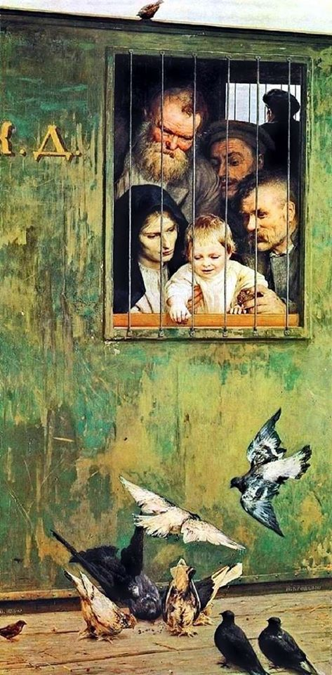

성선설과 요한복음 13:34 - Perfect Day 가사 해설
게시: 2020-05-07T06:30:59+09:00
최근에 페이스북에서 본 그림 중에, 19세기 후반 러시아 화가인 야로센코(Nikolai Yaroshenko)가 그린 Всюду жизнь (Life is everywhere, 삶은 어디에나) 라는 이름의 그림이 있습니다.

이 그림은 시베리아 유배지로 압송되는 어느 불행한 가족의 아이가, 기차칸 철창을 통해 자신들이 먹기에도 부족한 빵을 새들에게 나누어주는 장면입니다. 저 아이의 표정이 너무 행복해 보이지요. 생각해보면 동물 중에 자신과 전혀 상관없는 다른 동물들에게 먹이를 주면서 즐거움을 느끼는 동물은 인간 외에 또 있을까 싶습니다. 성선설을 주장한 맹자는 측은지심(惻隱之心)이야말로 사람의 본성 중 하나라고 했는데, 저도 그렇게 생각합니다. 반대로 말하면 측은지심이 없는 사람은 사람도 아니라는 뜻이지요.
저는 기독교인이지만 진화론이 기독교의 창조론과 전혀 상충되지 않는다고 생각합니다. 하나님이 인간을 만드실 때 진흙으로 빚어서 숨을 불어넣었느냐 하는 것은 다 비유일 뿐이고, 하나님이 인간의 유전자를 설계하실 때, 거기에 자신보다 약한 존재를 보면 불쌍히 여기고 도와주고 싶은 마음, 즉 측은지심을 정성 들여 코딩해넣으셨다고 저는 믿습니다. 그것이 인간의 번성에 도움이 되기 때문에 그렇게 하셨다는 것도 믿습니다.
최근에 굉장히 좋은 글을 읽었습니다. 생물학자인 최재천 교수님과의 인터뷰입니다. http://news.kmib.co.kr/article/view.asp?arcid=0014365692 여러분도 꼭 읽어보시기 바라고, 혹시 너무 바쁘셔서 긴 글을 읽지 못하실 형편이라면 최교수님의 아래 말씀만이라도 읽어보시기 바랍니다. "생물학자로 평생을 살면서 관찰해온 결과를 한 마디로 표현하면, 이 세상은 손잡은 놈들이 미처 손잡지 못한 놈들을 이기고 살아남은 세상이다. 어떻게 하면 주변 사람들과 함께 살 것인가 고민하는 게 훨씬 현명할 수밖에 없다." 저는 신약성서의 핵심 한줄을 뽑으라면 아래 구절을 항상 뽑는데, 결국 위의 말과 같은 말이고 맹자가 말한 측은지심과도 같은 말이라고 생각합니다. 요한복음 13:34 새 계명을 너희에게 주노니 서로 사랑하라 내가 너희를 사랑한것 같이 너희도 서로 사랑하라 동물에게 먹이를 주는 장면이 나오는 좋은 노래도 있습니다. 루 리드(Lou Reed)는 대부분 고개를 갸우뚱하며 누구더라 라고 할 정도의 가수지만, 그가 작사작곡해서 직접 부른 Perfect Day 라는 노래는 누구나 한번쯤 들어보았을 명곡입니다. 루 리드는 약물 중독 등등 여러가지 문제가 있었던 가수인데, 1972년 발표된 이 노래는 그가 당시 약혼녀였던 그의 아내 베티(Bettye Kronstad)와 뉴욕 센트럴 파크에서 평온한 하루를 보낸 뒤에 만들어졌다고 합니다. 사람들은 이 노래에서 말하는 '완벽한 하루'가 헤로인 중독을 뜻하는 거라는 해석도 내놓았지만 리드 자신은 '웃기는 소리, 정말 공원에서 상그리아를 마시고 집에 돌아오는 내용일 뿐'이라고 말했습니다.
작사가 본인이 무엇이라고 말하건 간에, 분명히 이 가사에는 무언가 씁쓸하고 안타까운 부분이 노골적으로 느껴집니다. 제가 이 노래에서 받은 느낌은 언제 어떻게 될지 모르는 삶을 사는 범죄자가 피를 철철 흘리면서 죽기 직전에 애인과 함께 지냈던 어떤 평온하고 행복했던 하루를 떠올리는 것 같다는 것이었습니다. 특히 맨 마지막, '인간은 뿌린대로 거두는 법'이라는 구절이 반복되는 것이 그렇습니다. 인간은 누구나 선한 구석이 있고, 아무리 추악한 인간도 인간으로서의 존엄성과 나름대로의 매력을 가지고 있습니다. 그러니 누구에게나 행복의 추억이 있기 마련이고, 그런 추억을 소중히 할 권리가 있습니다. 인간은 누구나 소중합니다. 가난하다고, 경쟁에서 뒤진다고, 출신이나 종교가 다르다고 함부로 해서는 안 됩니다.

Perfect Day (완벽한 하루) Just a perfect day Drink Sangria in the park And then later When it gets dark, we go home 그냥 완벽한 하루야 공원에서 상그리아를 마시고 좀 있다가 어두워지면 함께 집에 오지 Just a perfect day Feed animals in the zoo Then later A movie, too, and then home 그냥 완벽한 하루야 동물원에서 먹이를 주고 좀 있다가 영화도 보고 집에 와 Oh, it's such a perfect day I'm glad I spent it with you Oh, such a perfect day You just keep me hanging on You just keep me hanging on 아 그렇게 완벽한 하루를 너하고 보내서 좋았어 아 그렇게 완벽한 하루에 날 버티게 해주는 건 너야 날 버티게 해주는 건 너야 Just a perfect day Problems all left alone Weekenders on our own It's such fun 그냥 완벽한 하루야 문제거리들은 그냥 내버려 두고 주말은 그냥 우리끼리 보내 그게 정말 즐겁거든 Just a perfect day You made me forget myself I thought I was Someone else, someone good 그냥 완벽한 하루야 넌 나 자신을 잊게 해줬지 난 잠시 내가 아닌 다른 사람, 좋은 사람이라고 생각했어 Oh, it's such a perfect day I'm glad I spent it with you Oh, such a perfect day You just keep me hanging on You just keep me hanging on 아 그렇게 완벽한 하루를d 너하고 보내서 좋았어 아 그렇게 완벽한 하루에 날 버티게 해주는 건 너야 날 버티게 해주는 건 너야 You're going to reap just what you sow You're going to reap just what you sow You're going to reap just what you sow You're going to reap just what you sow 인간은 뿌린 대로 거두는 법 인간은 뿌린 대로 거두는 법 인간은 뿌린 대로 거두는 법 인간은 뿌린 대로 거두는 법
Source : https://en.wikipedia.org/wiki/Nikolai_Yaroshenko https://en.wikipedia.org/wiki/Perfect_Day_(Lou_Reed_song) https://en.wikipedia.org/wiki/Lou_Reed